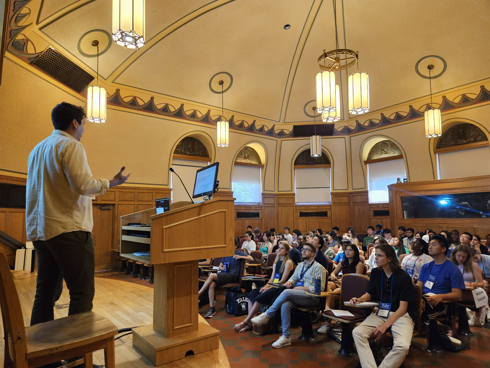

Mentorship holds immense significance to me as it has been instrumental in shaping my academic journey. I owe much of my success to the exceptional mentors who have guided and supported me along the way. I thoroughly enjoy sharing my knowledge and mentoring students from diverse backgrounds. Here are some of the teaching and mentoring experiences I have had:
-
Invited Speaker at Yale Young Global Scholars (2023).
-
Louis Stokes Alliance for Minority Participation (LSAMP): Graduate Coordinator (2017). Led the organizing of a program that gives underepresented undergraduate students a summer research expereince at Cornell University.
-
Mentor for the Yale SURF Program (2023). Mentored an undergraduate student through a summer research project.
-
Clubes de Ciencia Bolivia. Developed a one week course for high achieving college and high school Bolivian students and taught the class in Spanish. This course was taught in Santa Cruz, Bolivia and The Bolivian Embassy in Washington D.C..
-
Mentored various Undergraduate and Masters students at University of Southern California, Cornell, and Yale (2016 - Present)
-
-
If you ever find yourself with questions about navigating college life (such as choosing a major or finding a job), exploring the possibilities of graduate school (from finding the right advisor to securing a postdoc position), or simply seek guidance from a mentor on your academic journey, please feel free to reach out to me at houston.claure@yale.edu. I would be happy to offer my support and share insights based on my personal experiences.